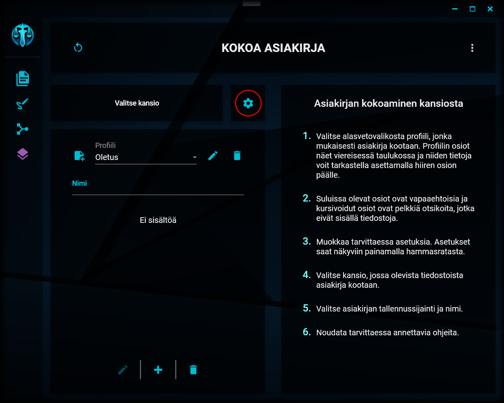
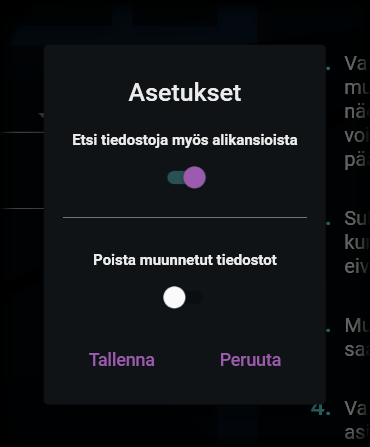

Asikirjan kokoamisen asetukset
Asetusten avaaminen
Kokoamisen asetusten avaaminen

Kokoamista koskevat asetukset saat avattua klikkaamalla näkymän keskivaiheilla olevaa hammasratasta.
Kokoamisen asetukset
Kokoamisen asetusikkuna

Asiakirjojen kokoamista koskien voit muuttaa seuraavia asetuksia:
1. Tiedostojen etsiminen alikansioista
Mikäli tämä asetus on käytössä, kokoamisen aikana tiedostoja etsitään myös valitun kansion alikansioista. Jos asetus on pois päältä, tiedostoja etsitään vain valitusta kansiosta, mutta ei sen sisällä olevista kansioista.
2. Muunnettujen tiedostojen poistaminen
Asiakirjan kokoamisen aikana tiedostoja (esim. doc, docx) muunnetaan tarpeen mukaan pdf-muotoon. Jos tämä asetus on päällä, muunnetut tiedostot poistetaan kokoamisen jälkeen ja ainoastaan alkuperäiset tiedostot jätetään kansioon. Jos asetus on pois päältä, kansioon jätetään sekä alkuperäiset että muunnetut tiedostot.
“Ahh, the middle finger, the most communicative of fingers.” - Guybrush Threepwood